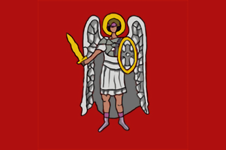
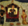
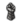
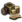

{kind=link}
{kind=link}
{kind=link}
| 伊比利亚 |
| 法兰西 |
| 低地 |
| 不列颠 |
| 北欧及波罗的 |
| 中欧 |
| 北德意志 |
| 南德意志 |
| 意大利 |
| 巴尔干及安纳托利亚 |
| 东欧 |
 | |
|---|---|
| 扎波罗热 | |
| 政府等级 | |
| 主流文化 | |
| 首都 | |
| 政体 | |
| 国教 | |
| 科技组 | |
| 扎波罗热的理念 |
此信息可能已落后版本，最后更新于1.35 ----
|
| +10% 人力恢复速度 +25% 掠夺速度 |
| +20% 全国人力修正
|
|
|
扎波罗热（英文：Zaporozhie）哥萨克酋长国是一个位于鲁塞尼亚（区域）的小国。它从1555年至1647年是  波兰（之后是
波兰（之后是  波兰立陶宛联邦）的附庸，在经过1648年至1653年的短暂独立后，从1654年开始至1763年为止是
波兰立陶宛联邦）的附庸，在经过1648年至1653年的短暂独立后，从1654年开始至1763年为止是  俄罗斯的附庸。
俄罗斯的附庸。
作为主流文化是鲁塞尼亚的国家，扎波罗热可以成立  鲁塞尼亚。扎波罗热事实上是游戏历史剧本中出现的唯一一个文化属于鲁塞尼亚或白俄罗斯的国家。
鲁塞尼亚。扎波罗热事实上是游戏历史剧本中出现的唯一一个文化属于鲁塞尼亚或白俄罗斯的国家。
|
|
这条信息可能已不适合当前版本，最后更新于1.35。 |
几个世纪之前，罗斯人的土地团结在一面旗帜下，定都在传奇般的城市基辅。然而蒙古入侵来临，游牧部族从大草原席卷而来，烧杀抢掠。他们将我们的宫殿和城镇一一踏为平地，连基辅也难逃厄运。在恐惧之中，我们的族人离开了罗斯的平原，向北部的腹地和深林里逃亡。那里就是我们今天所知的俄罗斯。
现在一个全新而倨傲的城市在北部冉冉升起。他们兼并周围的小国，它的统治者构想一个全新的罗斯人的国家。一个中心在莫斯科而非基辅的罗斯。
尽管如此，我们鲁塞尼亚人不会悄无声息地变成历史书中的一页。我们绝不允许冒牌货拿走属于我们父辈的遗产。基辅将迎来新生，我们要将其恢复到昔日的辉煌和荣耀，整个罗斯也将如此。
| 潜在需求 | 接受
|
效果
| |
谢契拉达[1]（英语：Sich Rada；乌克兰语：Січова Рада；俄语：Сечевая Рада），是扎波罗热哥萨克国家的政府体制。“谢契”（或译“塞契”），是哥萨克部族的营寨、要塞，也是其政治、军事中心的所在；“拉达”是乌克兰语“大会、委员会”的音译。
谢契拉达政府不使用阶层机制，且可以征召哥萨克骑兵。该政府改革给予以下增益：
|
|
只适用于DLC第三罗马激活时。 |
每年，谢契拉达政府会获得“3 +统治者属性”的特殊君主点数（分别对应 / /）。当有100点某种点数后，可以在
/）。当有100点某种点数后，可以在  政府界面选择相应的互动功能：
政府界面选择相应的互动功能：
点数的上限是150；若不使用政体功能，点数会一直累计到150点后便不再增加。
扎波罗热可以通过如下特有决议采用谢契拉达政体：
开局时  扎波罗热可以被
扎波罗热可以被  立陶宛作为附庸轻松释放。然而，它是一个非常强大的国家，有独特的游戏机制。要完全解锁这些潜能，需要走一条有些不寻常的路。
立陶宛作为附庸轻松释放。然而，它是一个非常强大的国家，有独特的游戏机制。要完全解锁这些潜能，需要走一条有些不寻常的路。
简而言之，“全翼骑兵+哥萨克骑兵波兰-扎波罗热游牧共和国”策略要求：
通过这些步骤意味着玩家可以将一套机制和想法与游戏中的一个国家 扎波罗热结合起来。 它的成功实施将提供…
扎波罗热结合起来。 它的成功实施将提供…

Horde ideasInstead of starting as  立陶宛 rather start the game as
立陶宛 rather start the game as  波兰.
波兰.
Poland starts the game without a king and there is little it can do but wait for the event “Successor of Wladyslaw III” to fire, allowing Poland to form a personal union over Lithuania.
However, do not accept this personal union, the player should rather choose a powerful local king instead. This will avoid the elective monarchy government form and its debuffs but most importantly will allow rivalry of Lithuania and gaining claims over its territory.
It is important to take the southern part of Lithuania in order to release  扎波罗热 as a vassal immediately after this first war. It takes ten years to re-annex a vassal so the earlier they are released the better.
扎波罗热 as a vassal immediately after this first war. It takes ten years to re-annex a vassal so the earlier they are released the better.
Be sure to take an extra steppe province or two east of the Zaporozhien cores to allow Poland access to steppe terrain (which will unlock the Cossacks Estate to improve Poland's cavalry) as well as a route to war for cash and humiliation with  莫斯科,
莫斯科,  大帐 and
大帐 and  克里米亚.
克里米亚.
After this critical first phase of releasing Zaporozhie, the player can add key territory to Poland - all with the aim to feed it to its Zaporozhien vassal - but not too much land as it will take longer to annex a vassal too bloated in size. Most of the land acquisition should be left until after the released Zaporozhie has re-formed Poland.
Suggested first stage expansion targets (hence before the release and playing as Zaporozhie and subsequent reforming of Poland) could be:
Continue to grant Polish provinces to Zaporozhie as they get closer to 80%+ annexation progress. Each grant will reduce their liberty desire together with frequently paying off their debt (which can be hastened by forcing them to divert their trade income to Poland). This focus on reduced liberty desire will become more important as their relative size to Poland will continue to grow.
Once nearly all of Poland has been granted to Zaporozhie and they are at 80%+ annexation they can be annexed almost immediately by doing two things:

nobility estate which also grants an instantPolitically it may be safe to stay friendly toward and even be allied to  奥地利 and
奥地利 and  波希米亚 until just before being ready to release and play as
波希米亚 until just before being ready to release and play as  扎波罗热. This will protect a weakened Poland (from generously granting so much land to Zaporozhie and consequently drastically losing force limit after each such grant) from its powerful and aggressive neighbour
扎波罗热. This will protect a weakened Poland (from generously granting so much land to Zaporozhie and consequently drastically losing force limit after each such grant) from its powerful and aggressive neighbour  奥斯曼 in the south. These alliances will become even more important should Poland gain
奥斯曼 in the south. These alliances will become even more important should Poland gain  摩尔达维亚 as a vassal and border state to the Ottomans.
摩尔达维亚 as a vassal and border state to the Ottomans.
Setting up the three trade centres around Danzig for the future home trade node of Zaporozhie are essential to building a powerful economy to support the cavalry-heavy troops. For example, developing the flat terrain in Danzig, a 15 development gem producing Danzig which has embraced the  Renaissance institution will trigger the faceting event within 1MTTH. Inventing faceting creates a Diamond District giving Danzig a permanent province modifier of +0.5 Local goods produced and
Renaissance institution will trigger the faceting event within 1MTTH. Inventing faceting creates a Diamond District giving Danzig a permanent province modifier of +0.5 Local goods produced and
While annexing Zaporozhie be sure to set them to divert all their trade income to Poland (the setting can be found in the subject interaction tab) and only grant Zaporozhie the trade centres last, after it has been given all of the non-trade centre provinces. This will allow Poland maximum trade income even while it is shrinking each year (especially in production and taxes) from its generous donations of land to its vassal.
Be sure to keep Poland updated on all technology. It is not required to invest in ideas much since all this will be lost on releasing and playing as Zaporozhie.
What will transfer from Poland to newly releasable Zaporozhie are the following:
Lost on transfer will be any innovativeness, so no point pursuing such benefits.
It is extremely useful to be able to have a 1st golden age as Poland as early as possible to help win wars, develop provinces for cheaper and gain technologies quicker. Once released and playing as Zaporozhie the player will be able to have a 2nd golden age and therefore Zaporozhien Poland can in fact have two golden ages this way.
Be aware that Polish missions cannot be done twice. Even if annexed. Once Poland is reformed it continues where its predecessor left off. So be sure to keep missions with useful claims and long-term bonuses for later when the new Poland has been formed.
Before releasing  扎波罗热 be sure to insult and set to rivals all Zaporozhie's possible future supporters of its independence. Cancel all ideas and use the refunded mana to develop key provinces. Use debt to embrace institutions or try to use admin mana to boost stability to +3 (the future stability cost of declaring independence from one's liege).
扎波罗热 be sure to insult and set to rivals all Zaporozhie's possible future supporters of its independence. Cancel all ideas and use the refunded mana to develop key provinces. Use debt to embrace institutions or try to use admin mana to boost stability to +3 (the future stability cost of declaring independence from one's liege).
On playing as a newly released  扎波罗热 be sure to do the following in order:
扎波罗热 be sure to do the following in order:
The newly formed Poland built on Zaporozhie Sich Rada mechanics can make use of many unusual idea combinations.
Combining  Aristocratic and Horde ideas to boost the already powerful Polish ideas around cavalry and military buffs like manpower make for easy conquests. These conquests allow for new land to be razed using the Sich Rada government reform mechanic generating vast quantities of mana while the same
Aristocratic and Horde ideas to boost the already powerful Polish ideas around cavalry and military buffs like manpower make for easy conquests. These conquests allow for new land to be razed using the Sich Rada government reform mechanic generating vast quantities of mana while the same  republican mechanics allow for even more mana by frequently having 666 rulers.
republican mechanics allow for even more mana by frequently having 666 rulers.
Being either Orthodox or Catholic, but specifically Orthodox, allows for the liberal use of the 'deus vult' CB from  Religious ideas on the many Catholic and Sunni neighbours. It also helps to convert the diverse region to one's religion quickly in order to gain the true faith provincial bonuses.
Religious ideas on the many Catholic and Sunni neighbours. It also helps to convert the diverse region to one's religion quickly in order to gain the true faith provincial bonuses.
 Administrative ideas will help with governing capacity constraints from the quick expansion of the Polish hussar horde and
Administrative ideas will help with governing capacity constraints from the quick expansion of the Polish hussar horde and  Diplomatic ideas will help to ally electors and ultimately dismantle the HRE as well as gaining from the war score reduction when taking so much land.
Diplomatic ideas will help to ally electors and ultimately dismantle the HRE as well as gaining from the war score reduction when taking so much land.
The powerful Sich Rada government reform which is unique to  扎波罗热 allows for:
扎波罗热 allows for:
As mentioned all these abilities are enhanced by:
Importantly  扎波罗热 can field 100% cavalry armies as this 'all Winged Hussar & Cossack cavalry horde of the Polish Zaporozhien Republic' strategy allows the
扎波罗热 can field 100% cavalry armies as this 'all Winged Hussar & Cossack cavalry horde of the Polish Zaporozhien Republic' strategy allows the  Cavalry to infantry ratio to be stretched to its limit, namely:
Cavalry to infantry ratio to be stretched to its limit, namely:
This makes for a permanent +105%  cavalry to infantry ratio for Zaporozhien Poland. Of course there is still the temporary +20%
cavalry to infantry ratio for Zaporozhien Poland. Of course there is still the temporary +20%  Cavalry Armies ability during the Age of Discovery.
Cavalry Armies ability during the Age of Discovery.
Not only do these Zaporozhien Polish armies comprise 100% cavalry units with insane combat abilities, morale and discipline, they also comprise mostly of special unit types.
Zaporozhien Poland benefits from +25%  Special unit force limit from Sich Rada, enacting the Polish Tier 5 - Military Doctrines and Organization reforms called 'Cossack Registry' which allows for another +10%
Special unit force limit from Sich Rada, enacting the Polish Tier 5 - Military Doctrines and Organization reforms called 'Cossack Registry' which allows for another +10%  special unit force limit and then, depending on the land given to the estate, from the Cossacks estate privileges "Establish the Cossacks regiments" and "Expand the Cossacks regiments" increase
special unit force limit and then, depending on the land given to the estate, from the Cossacks estate privileges "Establish the Cossacks regiments" and "Expand the Cossacks regiments" increase  Special unit force limit by :
Special unit force limit by :
|
|
只适用于DLC哥萨克激活时。 |
[math]\displaystyle{ \text {force limit} \cdot \frac{\text{Cossack estate land share}}{2} }[/math], or :
[math]\displaystyle{ \text {force limit} \cdot {\text{Cossack estate land share}} }[/math], if both are given.
Therefore at least half of the all-cavalry armies could comprise  Special units of huge stacks of Cossacks cavalry. Cossacks can be either
Special units of huge stacks of Cossacks cavalry. Cossacks can be either  infantry or
infantry or  cavalry units but they all benefit from
cavalry units but they all benefit from
That was the 'Smackus' part as resulting from the powerful all-cavalry armies. As to the 'Maximus' part which is all economy-based, even there  扎波罗热 excels as it:
扎波罗热 excels as it:
Firstly the Zaporozhien Poland cavalry armies are cheap, dirt cheap, at the maximum allowed −80%  cavalry cost discount, making them even significantly cheaper than infantry:
cavalry cost discount, making them even significantly cheaper than infantry:
Secondly, Zaporozhien Poland's capital is based in the Eastern European subcontinent which means all the trade nodes of Western Europe - all of them - and each of the trade nodes in Anatolia and Egypt can be made into a trade company (be sure to leave the non-trade centres outside the trade companies so their production can be boosted from "nearby trade companies" bonuses).
 扎波罗热 should therefore strategically and quickly move from the Danzig trade node to set a path via Lubeck and the Baltic to the English channel. Cossack cavalries should take London early and move its main trade node there soonest. Then take all the trade nodes in the English channel, thereby connecting the upstream and downstream lines from Moscow, Novgorod, Stockholm and Lubeck to the Dutch and English home node. After this money will flow in buckets and all other expansion can feed into this stream.
扎波罗热 should therefore strategically and quickly move from the Danzig trade node to set a path via Lubeck and the Baltic to the English channel. Cossack cavalries should take London early and move its main trade node there soonest. Then take all the trade nodes in the English channel, thereby connecting the upstream and downstream lines from Moscow, Novgorod, Stockholm and Lubeck to the Dutch and English home node. After this money will flow in buckets and all other expansion can feed into this stream.
视频战报
| 伊比利亚 |
| 法兰西 |
| 低地 |
| 不列颠 |
| 北欧及波罗的 |
| 中欧 |
| 北德意志 |
| 南德意志 |
| 意大利 |
| 巴尔干及安纳托利亚 |
| 东欧 |
| 北非 |
| 东非 |
| 中非 |
| 东南非 |
| 西非 |
| 西南非 |
| 近东 |
| 波斯及中亚 |
| 北亚 |
| 东亚 |
| 东南亚 |
| 印度 |
| 中美洲 |
| 墨西哥 |
| 北美东北 |
| 北美东南 |
| 北美中西部 |
| 部落联盟国家 |
| 前殖民领国家 | |
| 海盗共和国 |
| 南美北部 |
| 安第斯山区 |
| 南美东部 |
| 南美南部 |
| 前殖民领国家 |
| 澳大利亚 |
| 南太平洋 |
| 北太平洋 |
| 前殖民领国家 |